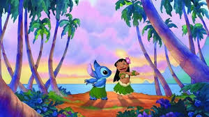
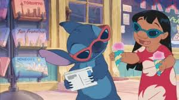
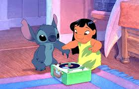
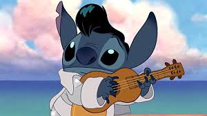
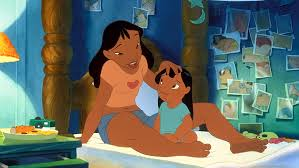

Imágenes
    
Stitch en una de sus muchas aventuras con Lilo.
Stitch, también conocido como Experimento 626, es un alienígena adorable y travieso que llegó a la Tierra y encontró el verdadero significado de la familia con Lilo.
stitch es un esperimento genetico,alienigena creado por el Dr.jumba jookibaen un planeta lejano.fue diseñado para ser un destructor de planetas ,pero stitch tiene un gran corazon bondadoso y eventualmente se convierte en un personaje adorable y divertodo
Originalmente creado para provocar el caos en toda la galaxia fue una amalgama de varias razas alienígenas con el fin de crear el arma definitiva, que se caracteriza por su mal genio y el comportamiento malicioso, rasgos que lo llevaron a mofarse y escapar heroicamente de la guardia galáctica que lo confiaría al exilio en un asteroide errante. Termina llegando a la Tierra y es arrollado por conductores que lo confunden con alguna extraña variedad de perro es llevado a la perrera donde la que sería su mejor amiga Lilo, lo adopta como su cachorro.
Stitch en una de sus muchas aventuras con Lilo.
Stitch fue creado por el Dr. Jumba Jookiba para ser una criatura destructiva. Sin embargo, tras llegar a la Tierra y conocer a Lilo, aprende a amar y cambia su vida completamente.
tambien es un tierno amoro sobre todo manteniendo la relacion con lilo y juntos viven aventurasny superan desafios a lo largo de la serie,stitich y lilo desarrollan una fuerte relacion de amistad y familia.
stitich se a convertido en un personaje querido y emblematico en disney,conocido con su personalidad divertida y su aparencia adorable.ha insipirado numerosos productos y a sido una fijura influyengte en la cultura popular .su relacion con lilo y su capacidad para cambiar y crecer lo han convertido en un personaje memorable y querido por audiencias para todas las edades.
stitch fue creado en un planeta lejano por el doctor.jumba jookiba,un cientifico loco que diseño experimentos grnrticos para causar caos y destruccuin en el universo.
stitch es el experimento numero 626,diseñado paa ser un destructor de planetas con habilidades sobrehumanas.sin hembargo,stitch tiene una personalidad unica y un corazon bondadoso que lo lleva a cuestionar su prposito ya buscar una nueva familia
Stitch considera a Lilo su hermana: lilo es una niña hawaiana dulce y cariñosa que adopta a stitch como su mascota y lo trata comosu mienbro de la familia
nani cuidadora y figura materna:nani es la hermana mayor de lilo y se encarga de cuidarla despues de la muerte de sus padres .es responsable y trabajadora pero tambien tiene su lado divertido y cariñoso.
Dr jumba jookiba:creador de stitch y su fugura paterna
pleakley:amigo y compañero de jumba que se convierte en mienbro mas de la familia de stitch
Stitch es travieso, curioso y a veces caótico, pero muy leal, amoroso y valiente cuando se trata de proteger a su familia. Su frase favorita es: "Ohana significa familia, y familia significa que nadie se queda atrás, despues de escapar de su creador stitch llega a la tierra y se convierte en el compañero de lilo in a niña hawaiana que lo adopta como mascota .juntos ,stitch y lilo viven aventuras y superan desafios mientras que stitch aprende a valorar la amistad .a lo largo de la serie ,stitch se enfrenta a numerosos enemigos y desafios ,pero siempre encuentra una manera de salir adelante gracias a su inteligencia y corazon bondadoso."
¿Quieres saber más sobre Stitch o unirte a su club de fans? visita toda nuetra pagina para que veas lo increible que es nuetro bonito amigo.estaremos subiendo contenido nuevo.